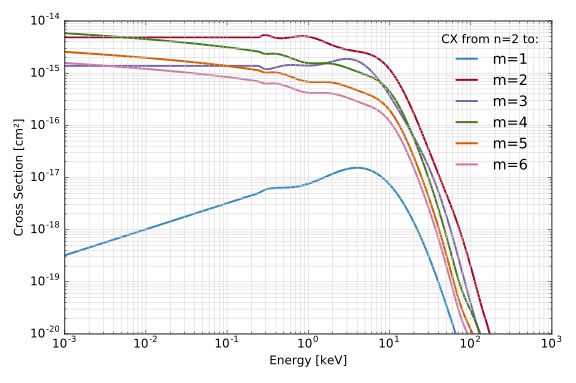
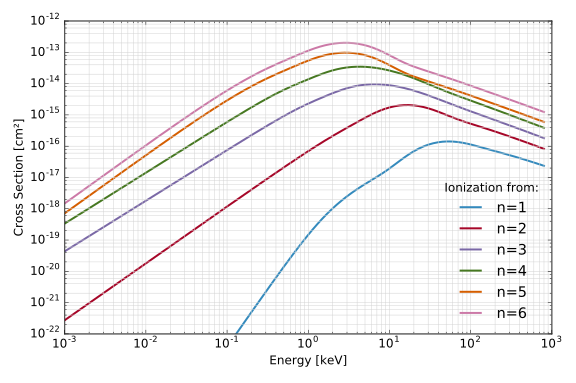
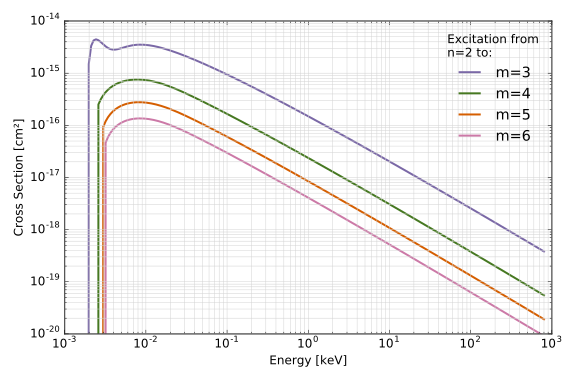
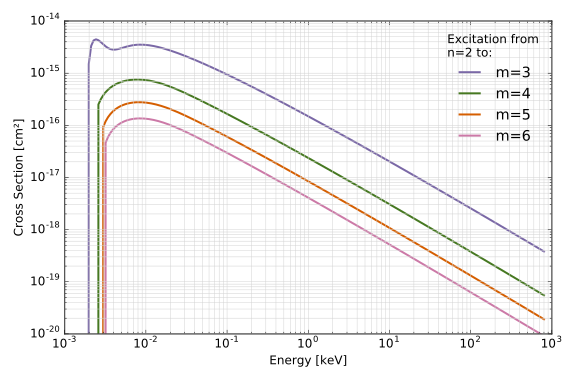
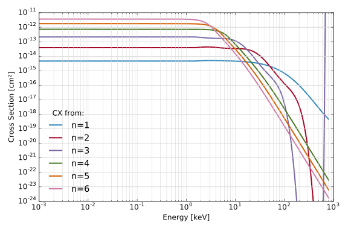
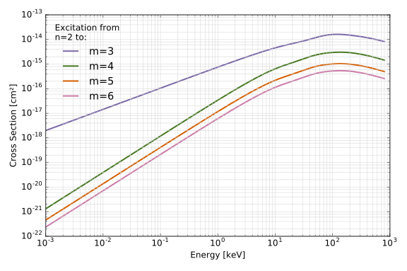
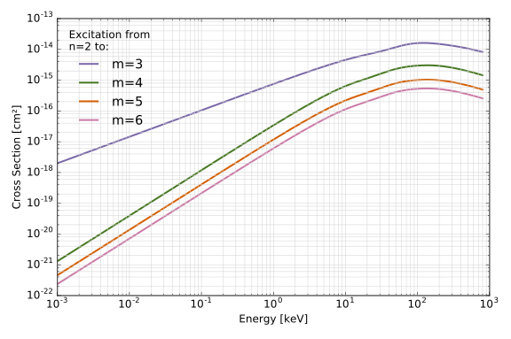

Atomic Tables
Atomic Cross Sections
As a neutral particle travels through a plasma it undergoes several different types of interactions
- Charge Exchange with Hydrogen and Impurities
- Excitation with Electrons, Hydrogen, and Impurities
- Ionization with Electrons, Hydrogen, and Impurities
These cross sections, as well as Maxwellian averaged reaction rates, are pre-computed over a range of logarithmically spaced collision energies and target temperatures.
Approximate Hydrogen Charge Exchange Cross Sections
Some of atomic transitions needed by FIDASIM are not available. In particular, FIDASIM needs the n/m-resolved charge exchange cross sections. While certain transitions are available through ADAS [4] others are not, as such, certain approximations are needed to fill out the table.
For instance, we use the equivalence principle (reversibility formula) to mirror the known ADAS cross sections. This however is insufficient to completly fill out the table.
Additionally, since the total cross sections for a transition from a given to any are given by Janev[2] we can then also assume that the probability of a transition from the state decreases exponentially with energy difference between the states we can "spread" the total cross section amoung the different m levels.
Note
Total cross sections for are not available so the total cross sections are used. Also we normalize the m levels to the Janev tables for consistancy.
A summary of the various approximations used in the charge exchange tables is given in the table below. (Spreading is done over m/rows)
| n \ m | 1 | 2 | 3 | 4 | 5 | 6 | Total |
|---|---|---|---|---|---|---|---|
| 1 | ADAS | ADAS | ADAS | ADAS | Spread | Spread | Janev(n=1) |
| 2 | Equivalence | ADAS | ADAS | Spread | Spread | Spread | Janev(n=2) |
| 3 | Equivalence | ADAS | ADAS | ADAS | ADAS | Spread | ADAS/Janev(n=3) |
| 4 | Equivalence | Equivalence | Equivalence | Spread | Spread | Spread | Janev(n=4) |
| 5 | Spread | Equivalence | Equivalence | Spread | Spread | Spread | Janev(n=4) |
| 6 | Spread | Equivalence | Equivalence | Spread | Spread | Spread | Janev(n=4) |
Generating Tables
FIDASIM provides a routine, generate_tables to generate the atomic tables.
The default settings should be appropriate for most devices but in some cases it may be necessary to generate custom tables. For instance, the default tables are calculated assuming the main impurity is Carbon-6 so it would be inappropriate to the default tables if you have a different main impurity. To generate custom tables from the tables directory run
./generate_tables > table_settings.dat
to generate the namelist file that contains the default settings. Edit this file to change the settings.
After editing the namelist file run
./generate_tables table_settings.dat [NUM_THREADS] <-- NUM_THREADS is optional
and wait for a couple of hours depending on the number of threads used.
Atomic & Nuclear Data References
The atomic data is taken from a variety of sources [1-5]
- W.L. Wiese, M.W. Smith, and B.M. Glennon. Atomic Transition Probabilities. Volume 1. Hydrogen through Neon. National Bureau of Standards Washington DC Institute for Basic Standards, 1966.
- R.K. Janev, D. Reiter, and U. Samm. Collision processes in low-temperature hydrogen plasmas. Forschungszentrum Jülich, Zentralbibliothek, 2003.
- M. O'Mullane. Review of proton impact driven ionisation from the excited levels in neutral hydrogen beams. ADAS note, 2009.
- ADAS: Atomic Data and Analysis Structure
- R.K. Janev and J.J. Smith. Cross sections for collision processes of hydrogen atoms with electrons, protons and multiply charged ions. Atomic and Plasma-Material Interaction Data for Fusion: Volume 4, 1993.
- Reinhold, C. O., R. E. Olson, and W. Fritsch. Excitation of atomic hydrogen by fully stripped ions. Physical Review A 41.9 1990.
- Bosch, H-S., and G. M. Hale. Improved formulas for fusion cross-sections and thermal reactivities. !+ Nuclear fusion 32.4 1992.
- Aladdin Database: R.K. Janev, W.D. Langer, K. Evans Jr., D.E. Post Jr. H-HE-PLASMA (1987)
A more precice references can be found in the Fortran function documentation. For example, p_cx_janev
Relevent Namelist Settings
tables_file: Location of atomic tables file
Fortran References
- atomic_tables: Module containing routines to calculate atomic tables and reaction rates
- generate_tables: Program to create atomic tables file
- AtomicCrossSection: Defines a n/m-resolved atomic cross section table
- AtomicRates: Defines a n/m-resolved atomic cross section table
- AtomicTransitions: Defines an atomic table for populating and de-populating reaction rates
- AtomicTables: Atomic tables for various types of interactions need by FIDASIM
- NuclearRates: Defines nuclear fusion reaction rate table
- read_atomic_cross: Reads atomic cross section from file
- read_atomic_rate: Reads atomic rates from file
- read_atomic_transitions: Reads in a atomic transitions table from file
- read_nuclear_rates: Reads in nuclear reaction rates from file
- read_tables: Reads all cross sections and rates needed by FIDASIM
- m_spread: Spreads total n cross section amoung m states
Hydrogen-Hydrogen Interactions




Hydrogen-Electron Interactions
 


Hydrogen-Carbon₆ Interactions

 
